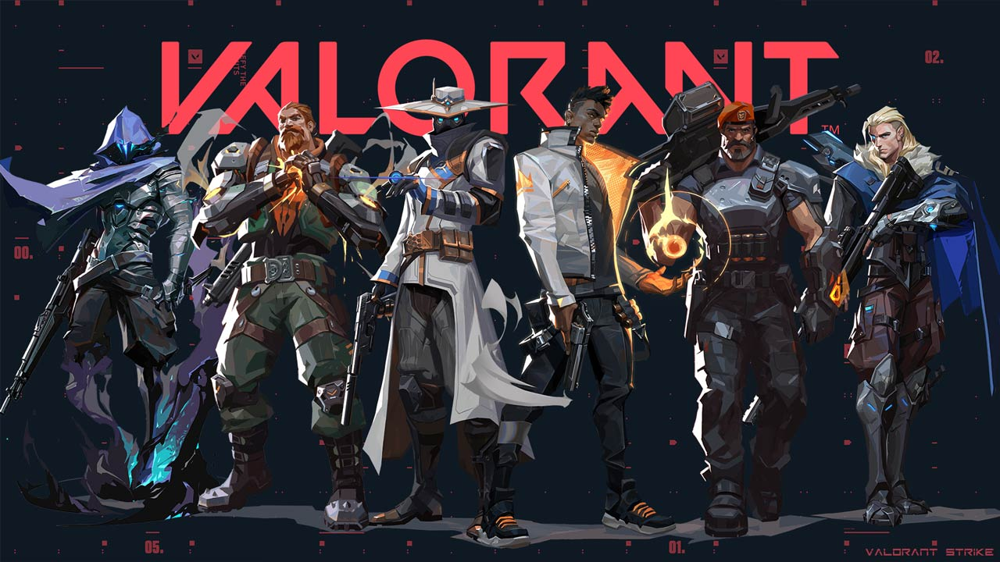

Valorant
O que é o VALORANT?
VALORANT é um jogo de tiro tático em primeira pessoa (FPS) de heróis, gratuito para jogar (free-to-play), desenvolvido e publicado pela Riot Games
. Lançado originalmente em junho de 2020 para Windows, o jogo combina fundamentos clássicos de tiro com personagens que possuem habilidades únicas, sendo inspirado em mecânicas de títulos como Counter-Strike e Overwatch
. Atualmente, o jogo também está disponível para os consoles PlayStation 5 e Xbox Series X/S
.
Mecânica de Jogo e Objetivos
O modo principal de VALORANT consiste em partidas de 5 contra 5, onde uma equipe atua no Ataque e a outra na Defesa, trocando de lado após 12 rodadas
.
- Ataque: O objetivo é escoltar e ativar um dispositivo explosivo chamado Spike em um dos pontos de bomba (bomb sites) do mapa e protegê-lo por 45 segundos até a detonação
.
- Defesa: A equipe deve impedir o plantio da Spike ou desarmá-la caso ela tenha sido ativada
.
Vitória: Uma rodada também pode ser vencida ao eliminar todos os membros da equipe adversária
. Em partidas padrão, a primeira equipe a conquistar 13 rodadas vence o confronto
.
Agentes e Funções
Os jogadores controlam personagens chamados Agentes, vindos de diversas culturas e países do mundo real
. Cada agente possui habilidades específicas e uma poderosa "Ultimate" que deve ser carregada através de abates, mortes ou objetivos
. Eles são divididos em quatro funções estratégicas:
- Duelistas: São "fraggers autossuficientes" responsáveis por liderar o ataque, criar espaço para o time e buscar confrontos diretos
- Iniciadores: Especialistas em quebrar posições defensivas, reunindo informações sobre a localização dos inimigos ou cegando-os para facilitar o avanço da equipe
- Controladores: Focam em "dividir territórios perigosos", utilizando fumaças (smokes) e paredes para bloquear a visão dos adversários e controlar o fluxo do mapa
- Sentinelas: Especialistas em defesa que bloqueiam áreas e vigiam as costas (flancos) da equipe, utilizando dispositivos e habilidades de suporte para ancorar locais
Economia e Arsenal
VALORANT utiliza um sistema de economia dentro do jogo, onde os jogadores recebem créditos no início de cada rodada com base no resultado da rodada anterior, abates realizados e objetivos concluídos
. Esses créditos são usados para comprar armas, escudos e cargas para as habilidades dos agentes
. O arsenal é variado, incluindo pistolas, submetralhadoras, escopetas, fuzis de assalto e rifles de precisão
.
Tecnologia e Integridade
O jogo foi desenvolvido no motor gráfico Unreal Engine (atualmente operando na versão Unreal Engine 5) e foca em alta performance e baixa latência
. Para combater trapaças e garantir a integridade competitiva, a Riot Games utiliza o Vanguard, um sistema antitrapaça que opera no nível do kernel do sistema operacional
. Além disso, VALORANT possui um cenário de esports global vibrante, consolidado pelo VALORANT Champions Tour (VCT)
.
Elos
O sistema competitivo de VALORANT é estruturado em uma hierarquia de elos que permitem aos jogadores medir seu progresso e enfrentar oponentes de nível técnico semelhante
. Os ranques começam no Ferro e progridem através do Bronze, Prata, Ouro, Platina, Diamante, Ascendente, Imortal e, finalmente, o topo da pirâmide, o Radiante
. Com exceção do Radiante, cada elo é dividido em três tiers (ex: Ouro 1, 2 e 3)
. Para subir de nível, os jogadores acumulam Classificação Ranqueada (CR), sendo necessário atingir 100 pontos para conquistar uma promoção ao próximo tier ou ranque
. O ganho ou perda desses pontos é influenciado pelo resultado das partidas e pelo MMR (classificação oculta), que compara o desempenho individual com a média regional
. No início de novos episódios ou atos, os jogadores realizam partidas de colocação para determinar seu ponto de partida, sendo Ascendente 3 a colocação inicial máxima permitida
. Já o elo Radiante é reservado exclusivamente para os 500 melhores jogadores de cada região
.